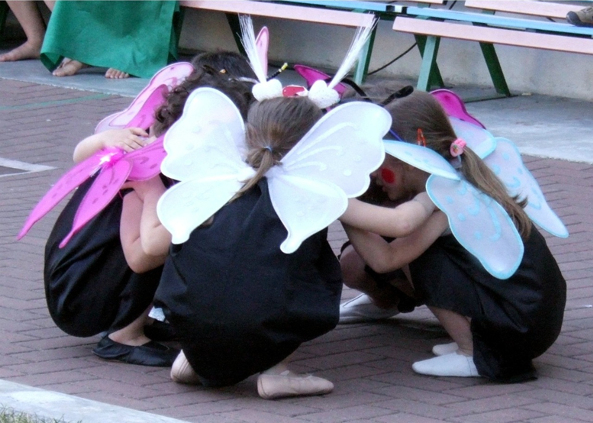

Explore Creativity
Our Arts & Crafts sessions are designed to inspire young minds. From painting and sculpting to crafting unique items, children enjoy a hands-on approach to creativity.
Join us to watch your little one's imagination come to life.
